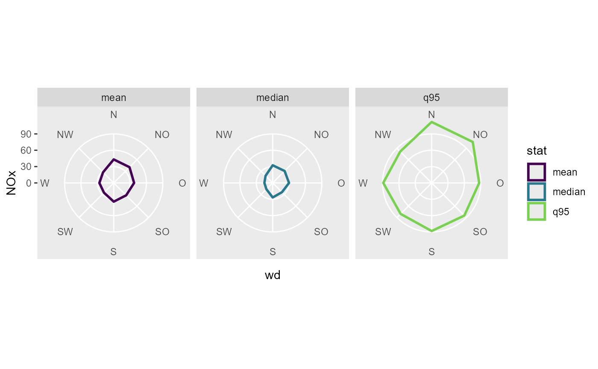

Input data should be original unbinned data. 1-dimensional binning and calculating summary statistics over wind direction and/or wind velocity bins, respectively. NA values in z and in ws, wd (after cutting) will be silently removed before applying functions
Usage
summary_wind(
data,
ws,
wd,
z,
groupings = grp(),
fun = "mean",
fun.args = list(),
nmin = 3,
wd_cutfun = cut_wd.fun(binwidth = 45),
ws_cutfun = cut_ws.fun(binwidth = 1)
)Arguments
- data
a data.frame or tibble containing the data (wide format)
- ws
NULL or symbol giving the wind velocity parameter name (wind velocity preferably in m/s)
- wd
symbol giving the wind direction parameter name in degrees
- z
symbol giving the parameter name to be summarised
- groupings
additional groupings. Use helper
grp()to create- fun
function or list of functions for summary.
- fun.args
a list of extra arguments passed on to fun.
- nmin
numeric, minimum number of values for fun, if n < nmin: NA is returned
- wd_cutfun
function, cut function for wind direction (to create bins). See
cut_wd.fun()for options.- ws_cutfun
function, cut function for wind speed. See
cut_ws.fun()for examples
Computed variables
The names of the columns stay the same as in data (for the arguments "ws", "wd" and "z").
binned column
wsifis.null(ws) == FALSEbinned column
wdfactor column
statcontaining the name of the summarize function as levelcolumn
zwith the result of the summarize functionncount of occurrences for the corresponding binfreqfrequency of the corresponding bin
Examples
library(ggplot2)
fn <- rOstluft.data::f("Zch_Stampfenbachstrasse_2010-2014.csv")
data <- rOstluft::read_airmo_csv(fn)
data <- rOstluft::rolf_to_openair(data)
data <- dplyr::mutate(data, year = lubridate::year(date))
summary_wind(data, "ws", "wd", "NO2")
#> # A tibble: 57 × 6
#> ws wd n freq stat NO2
#> <ord> <ord> <int> <dbl> <fct> <dbl>
#> 1 [0,1] N 3230 0.0372 mean 43.6
#> 2 [0,1] NO 3894 0.0448 mean 44.6
#> 3 [0,1] O 1394 0.0160 mean 44.0
#> 4 [0,1] SO 1342 0.0155 mean 43.9
#> 5 [0,1] S 2965 0.0341 mean 47.6
#> 6 [0,1] SW 3357 0.0386 mean 45.0
#> 7 [0,1] W 4518 0.0520 mean 43.7
#> 8 [0,1] NW 3497 0.0403 mean 39.8
#> 9 (1,2] N 5764 0.0664 mean 39.4
#> 10 (1,2] NO 10172 0.117 mean 41.3
#> # ℹ 47 more rows
# multiple stats: Pass function, by name, reference, as function or one sided formula
q95 <- function(x) stats::quantile(x, probs = 0.95)
funs <- list(
"mean",
"median",
"q95_1" = q95,
"q95_2" = function(x) stats::quantile(x, probs = 0.95),
"q95_3" = ~ stats::quantile(., probs = 0.95)
)
res <- summary_wind(data, "ws", "wd", "NO2", fun = funs)
res
#> # A tibble: 285 × 6
#> ws wd n freq stat NO2
#> <ord> <ord> <int> <dbl> <fct> <dbl>
#> 1 [0,1] N 3230 0.0372 mean 43.6
#> 2 [0,1] N 3230 0.0372 median 41.4
#> 3 [0,1] N 3230 0.0372 q95_1 79.8
#> 4 [0,1] N 3230 0.0372 q95_2 79.8
#> 5 [0,1] N 3230 0.0372 q95_3 79.8
#> 6 [0,1] NO 3894 0.0448 mean 44.6
#> 7 [0,1] NO 3894 0.0448 median 42.5
#> 8 [0,1] NO 3894 0.0448 q95_1 81.6
#> 9 [0,1] NO 3894 0.0448 q95_2 81.6
#> 10 [0,1] NO 3894 0.0448 q95_3 81.6
#> # ℹ 275 more rows
# and q95, q95_1, q95_2, q95_3 alle have the same value
tidyr::spread(res, "stat", "NO2") %>%
dplyr::select(q95_1, q95_2, q95_3)
#> # A tibble: 57 × 3
#> q95_1 q95_2 q95_3
#> <dbl> <dbl> <dbl>
#> 1 79.8 79.8 79.8
#> 2 81.6 81.6 81.6
#> 3 80.5 80.5 80.5
#> 4 84.0 84.0 84.0
#> 5 91.3 91.3 91.3
#> 6 83.0 83.0 83.0
#> 7 78.7 78.7 78.7
#> 8 76.2 76.2 76.2
#> 9 74.2 74.2 74.2
#> 10 77.1 77.1 77.1
#> # ℹ 47 more rows
# is for some reason fun.args used with multiple functions, use ... to catch
# superfluous arguments:
funs <- list(
"q95" = function(x, ...) stats::quantile(x, probs = 0.95),
"mean"
)
summary_wind(data, "ws", "wd", "NO2", fun = funs, fun.args = list(na.rm = TRUE))
#> # A tibble: 114 × 6
#> ws wd n freq stat NO2
#> <ord> <ord> <int> <dbl> <fct> <dbl>
#> 1 [0,1] N 3230 0.0372 q95 79.8
#> 2 [0,1] N 3230 0.0372 mean 43.6
#> 3 [0,1] NO 3894 0.0448 q95 81.6
#> 4 [0,1] NO 3894 0.0448 mean 44.6
#> 5 [0,1] O 1394 0.0160 q95 80.5
#> 6 [0,1] O 1394 0.0160 mean 44.0
#> 7 [0,1] SO 1342 0.0155 q95 84.0
#> 8 [0,1] SO 1342 0.0155 mean 43.9
#> 9 [0,1] S 2965 0.0341 q95 91.3
#> 10 [0,1] S 2965 0.0341 mean 47.6
#> # ℹ 104 more rows
# more wd classes, less ws classes and squish ws
summary_wind(data, "ws", "wd", "NO",
wd_cutfun = cut_wd.fun(binwidth = 22.5),
ws_cutfun = cut_ws.fun(binwidth = 2, ws_max = 6))
#> # A tibble: 54 × 6
#> ws wd n freq stat NO
#> <ord> <ord> <int> <dbl> <fct> <dbl>
#> 1 [0,2] N 4225 0.0486 mean 27.0
#> 2 [0,2] NNO 8338 0.0960 mean 34.5
#> 3 [0,2] NO 7623 0.0878 mean 28.4
#> 4 [0,2] ONO 2525 0.0291 mean 22.8
#> 5 [0,2] O 1087 0.0125 mean 21.6
#> 6 [0,2] OSO 743 0.00855 mean 23.0
#> 7 [0,2] SO 1205 0.0139 mean 19.1
#> 8 [0,2] SSO 3498 0.0403 mean 18.5
#> 9 [0,2] S 4916 0.0566 mean 22.5
#> 10 [0,2] SSW 3223 0.0371 mean 23.2
#> # ℹ 44 more rows
# no ws class
summary_wind(data, NULL, "wd", "NO")
#> # A tibble: 8 × 5
#> wd n freq stat NO
#> <ord> <int> <dbl> <fct> <dbl>
#> 1 N 11292 0.130 mean 27.8
#> 2 NO 22480 0.259 mean 25.9
#> 3 O 2564 0.0295 mean 21.1
#> 4 SO 3422 0.0394 mean 16.7
#> 5 S 13007 0.150 mean 18.3
#> 6 SW 12088 0.139 mean 13.5
#> 7 W 13197 0.152 mean 14.8
#> 8 NW 8809 0.101 mean 15.0
# additional grouping with strings, symbols or named expressions
summary_wind(data, ws, wd, NO2, group = grp("site", year, wday = lubridate::wday(date)))
#> # A tibble: 1,284 × 9
#> ws wd site year wday n freq stat NO2
#> <ord> <ord> <fct> <dbl> <dbl> <int> <dbl> <fct> <dbl>
#> 1 [0,1] N Zch_Stampfenbachstrasse 2010 1 76 0.0304 mean 37.1
#> 2 [0,1] N Zch_Stampfenbachstrasse 2010 2 86 0.0350 mean 47.2
#> 3 [0,1] N Zch_Stampfenbachstrasse 2010 3 98 0.0398 mean 48.4
#> 4 [0,1] N Zch_Stampfenbachstrasse 2010 4 102 0.0414 mean 49.5
#> 5 [0,1] N Zch_Stampfenbachstrasse 2010 5 82 0.0332 mean 46.3
#> 6 [0,1] N Zch_Stampfenbachstrasse 2010 6 85 0.0343 mean 49.9
#> 7 [0,1] N Zch_Stampfenbachstrasse 2010 7 89 0.0357 mean 40.8
#> 8 [0,1] N Zch_Stampfenbachstrasse 2011 1 97 0.0396 mean 30.9
#> 9 [0,1] N Zch_Stampfenbachstrasse 2011 2 88 0.0357 mean 44.6
#> 10 [0,1] N Zch_Stampfenbachstrasse 2011 3 88 0.0356 mean 46.9
#> # ℹ 1,274 more rows
# how often comes which concentration from one direction
summary_wind(data, NULL, wd, NO2,
group = grp(NO2_class = ggplot2::cut_number(NO2, 5)))
#> # A tibble: 40 × 6
#> wd NO2_class n freq stat NO2
#> <ord> <fct> <int> <dbl> <fct> <dbl>
#> 1 N [0.066,15.9] 990 0.0570 mean 12.3
#> 2 N (15.9,25.6] 1992 0.115 mean 20.9
#> 3 N (25.6,36.5] 2551 0.147 mean 31.1
#> 4 N (36.5,51.2] 2751 0.158 mean 43.4
#> 5 N (51.2,148] 3008 0.173 mean 65.8
#> 6 NO [0.066,15.9] 2177 0.125 mean 12.2
#> 7 NO (15.9,25.6] 4142 0.238 mean 21.0
#> 8 NO (25.6,36.5] 5510 0.317 mean 31.0
#> 9 NO (36.5,51.2] 5451 0.314 mean 43.3
#> 10 NO (51.2,148] 5200 0.299 mean 66.4
#> # ℹ 30 more rows
# the same but we use ws as pollutant
summary_wind(data, NO2, wd, NO2, ws_cutfun = cut_number.fun(5))
#> # A tibble: 40 × 6
#> NO2 wd n freq stat NO2.stat
#> <fct> <ord> <int> <dbl> <fct> <dbl>
#> 1 [0.066,15.9] N 991 0.0114 mean 12.3
#> 2 [0.066,15.9] NO 2177 0.0251 mean 12.2
#> 3 [0.066,15.9] O 226 0.00260 mean 11.7
#> 4 [0.066,15.9] SO 671 0.00773 mean 11.1
#> 5 [0.066,15.9] S 2171 0.0250 mean 11.1
#> 6 [0.066,15.9] SW 4104 0.0472 mean 9.80
#> 7 [0.066,15.9] W 4670 0.0538 mean 10.1
#> 8 [0.066,15.9] NW 2367 0.0273 mean 11.0
#> 9 (15.9,25.6] N 1991 0.0229 mean 20.9
#> 10 (15.9,25.6] NO 4145 0.0477 mean 21.0
#> # ℹ 30 more rows
# some plots using the summarized data
# a radar plot
funs <- list(
"mean",
"median",
"q95" = ~ stats::quantile(., probs = 0.95)
)
data_summarized <- summary_wind(data, ws, wd, NOx, fun = funs,
ws_cutfun = cut_number.fun(1)
)
ggplot(data_summarized, aes(x = wd, y = NOx, color = stat, group = stat)) +
geom_polygon(size = 1, fill = NA) +
coord_radar(start = - 22.5 / 180 * pi ) +
scale_color_viridis_d(end = 0.8) +
scale_y_continuous(limits = c(0, NA), expand = c(0,0, 0, 0)) +
facet_wrap(vars(stat))

# a wind rose
data_summarized <- summary_wind(data, ws, wd, ws,
ws_cutfun = cut_ws.fun(ws_max = 4, reverse = TRUE)
)
ggplot(data_summarized, aes(x = wd, y = freq, fill = ws)) +
geom_bar(stat = "identity") +
coord_polar2(start = - 22.5 / 180 * pi ) +
scale_y_continuous(
limits = c(0, NA),
expand = c(0,0, 0, 0),
labels = scales::percent
) +
scale_fill_viridis_d()
 # a pollution rose, use the pollutant as ws
data_summarized <- summary_wind(data, NOx, wd, NOx,
ws_cutfun = cut_number.fun(5)
)
# we can plot with the group as fill
ggplot(data_summarized, aes(x = wd, y = freq, fill = forcats::fct_rev(NOx))) +
geom_bar(stat = "identity") +
coord_polar2(start = - 22.5 / 180 * pi ) +
scale_y_continuous(limits = c(0, NA), expand = c(0,0, 0, 0)) +
scale_fill_viridis_d(direction = -1, name = "NOx")
# or the mean of the group as fill
ggplot(data_summarized, aes(x = wd, y = freq, fill = NOx.stat)) +
geom_bar(stat = "identity") +
coord_polar2(start = - 22.5 / 180 * pi ) +
scale_y_continuous(limits = c(0, NA), expand = c(0,0, 0, 0)) +
scale_fill_viridis_c(name = "NOx")
# a pollution rose, use the pollutant as ws
data_summarized <- summary_wind(data, NOx, wd, NOx,
ws_cutfun = cut_number.fun(5)
)
# we can plot with the group as fill
ggplot(data_summarized, aes(x = wd, y = freq, fill = forcats::fct_rev(NOx))) +
geom_bar(stat = "identity") +
coord_polar2(start = - 22.5 / 180 * pi ) +
scale_y_continuous(limits = c(0, NA), expand = c(0,0, 0, 0)) +
scale_fill_viridis_d(direction = -1, name = "NOx")
# or the mean of the group as fill
ggplot(data_summarized, aes(x = wd, y = freq, fill = NOx.stat)) +
geom_bar(stat = "identity") +
coord_polar2(start = - 22.5 / 180 * pi ) +
scale_y_continuous(limits = c(0, NA), expand = c(0,0, 0, 0)) +
scale_fill_viridis_c(name = "NOx")